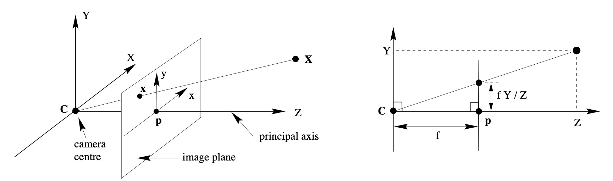
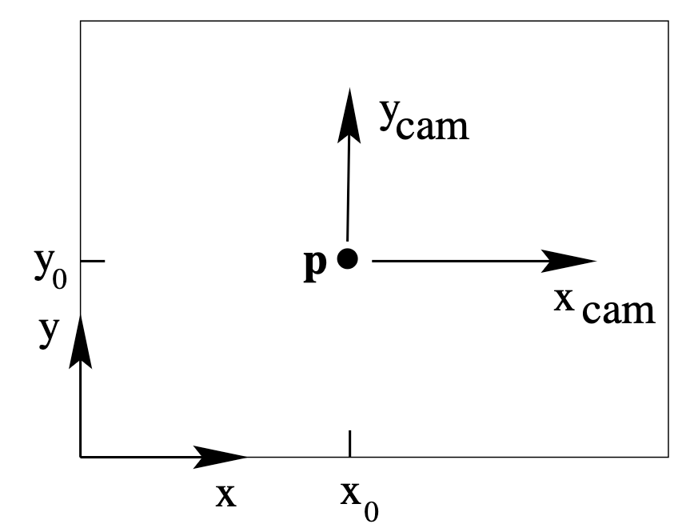
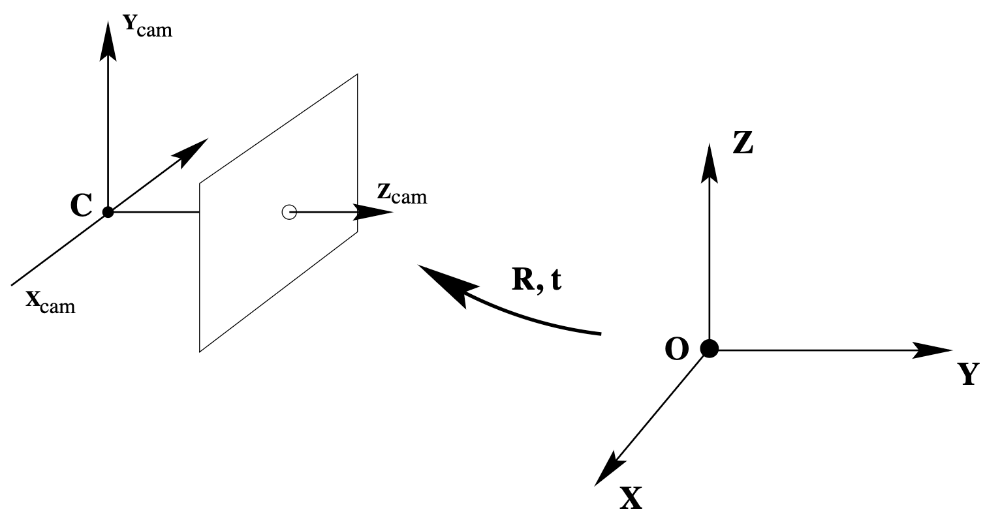

17/02/2026
Camera model - From 3D to 2D
Author: David Rapado-Rincon
Date: 14/05/2025
The following text summarizes the camera model explained on Tutorial A2 camera models. Each step builds upon the previous one by incorporating additional parameters or transformations.
The process of transforming a 3D world point to a 2D image point in a camera can be broken down into the following steps:
- Transforming X̃world to the camera coordinate system. The result is X̃cam.
- Performing an ideal projection from 3D to 2D (sensor plane).
- Transforming the 2D point from the sensor plane to the image plane. This involves accounting for the principal point offset and pixel dimensions.
- Distortions and deviation from the ideal linear model. This step addresses lens distortions and other non-linearities.
1. Step 2 - Ideal projection from 3D to 2D
This step models how a 3D world (with respect to the camera) is projected onto a 2D image under ideal conditions.
- Conceptual setup: The camera center (center of projection) is at (0,0,0), and the image plane is defined by Z = f.
- Projection mechanism: A 3D point X = (X,Y,Z)T maps to the intersection between the image plane and the line from X to the camera center.
- Geometric derivation: Using similar triangles, the projected point is (fX/Z, fY/Z).
(1) \[\begin{bmatrix}X \\ Y \\ Z\end{bmatrix} \mapsto \begin{bmatrix}\frac{fX}{Z} \\ \frac{fY}{Z}\end{bmatrix}\]

1.1 Using homogeneous coordinates
Homogeneous coordinates allow the non-linear projection mapping to be expressed as linear matrix multiplication.
(2) \[\begin{bmatrix}X \\ Y \\ Z \\ 1\end{bmatrix} \mapsto \begin{bmatrix}fX \\ fY \\ Z\end{bmatrix} = P\begin{bmatrix}X \\ Y \\ Z \\ 1\end{bmatrix}\]
(3) \[P = \operatorname{diag}(f,f,1)[I\mid 0] = \begin{bmatrix}f & 0 & 0 & 0 \\ 0 & f & 0 & 0 \\ 0 & 0 & 1 & 0\end{bmatrix}\]
2. Step 3 - From sensor to camera (Principal point offset)
The origin of the image plane coordinate system does not necessarily coincide with the principal point. Let (px, py)T be the principal point in image coordinates.
(4) \[\begin{bmatrix}X \\ Y \\ Z\end{bmatrix} \mapsto \begin{bmatrix}\frac{fX}{Z} + p_x \\ \frac{fY}{Z} + p_y\end{bmatrix}\]
(5) \[\begin{bmatrix}X \\ Y \\ Z \\ 1\end{bmatrix} \mapsto \begin{bmatrix}fX + Zp_x \\ fY + Zp_y \\ Z\end{bmatrix}\]
(6) \[K = \begin{bmatrix}f & 0 & p_x \\ 0 & f & p_y \\ 0 & 0 & 1\end{bmatrix}\]
(7) \[x = K[I\mid 0]X_{\mathrm{cam}}\]

3. Step 1 - Camera rotation and translation with respect to the world
In most scenarios, 3D points are expressed in a world frame distinct from the camera frame. A rigid transformation (rotation and translation) relates both frames.
(8) \[\tilde{X}_{\mathrm{cam}} = R(\tilde{X} - \tilde{C})\]
(9) \[X_{\mathrm{cam}} = \begin{bmatrix}R & -R\tilde{C} \\ 0^T & 1\end{bmatrix}X\]
(10) \[x = KR[I\mid -\tilde{C}]X\]
(11) \[P = K[R\mid t],\quad t = -R\tilde{C}\]

4. Digital sensors - pixel space
Digital cameras introduce additional calibration effects, such as non-square pixels and image coordinates measured in pixels instead of metric units.
If mx and my are the pixel densities in x and y, the calibration matrix becomes:
(12) \[K = \begin{bmatrix}f_x & 0 & x_0 \\ 0 & f_y & y_0 \\ 0 & 0 & 1\end{bmatrix}\]
Where fx = f·mx, fy = f·my, x0 = px·mx, y0 = py·my.
The pixel-space calibration matrix extends the same geometry into pixel units and preserves the same projection structure.
5. References
Hartley, R., & Zisserman, A. (2004). Chapter 6. In Multiple View Geometry in Computer Vision (2nd ed., pp. 153-158). Cambridge University Press.